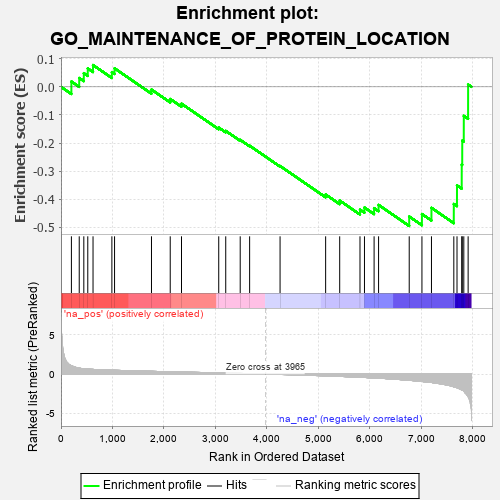
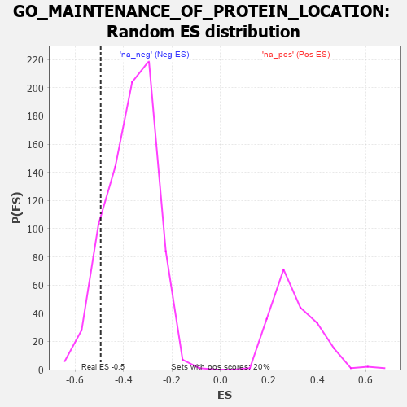

| | | Dataset | 7d |
| Phenotype | NoPhenotypeAvailable |
| Upregulated in class | na_neg |
| GeneSet | GO_MAINTENANCE_OF_PROTEIN_LOCATION |
| Enrichment Score (ES) | -0.49468395 |
| Normalized Enrichment Score (NES) | -1.338824 |
| Nominal p-value | 0.1080402 |
| FDR q-value | 0.42616725 |
| FWER p-Value | 1.0 |
Table: GSEA Results Summary

Fig 1: Enrichment plot: GO_MAINTENANCE_OF_PROTEIN_LOCATION
Profile of the Running ES Score & Positions of GeneSet Members on the Rank Ordered List
| PROBE | GENE SYMBOL | GENE_TITLE | RANK IN GENE LIST | RANK METRIC SCORE | RUNNING ES | CORE ENRICHMENT | | 1 | BCL3 | | | 202 | 1.047 | 0.0189 | No |
| 2 | TAPT1 | | | 354 | 0.743 | 0.0314 | No |
| 3 | SUFU | | | 443 | 0.665 | 0.0485 | No |
| 4 | GET4 | | | 520 | 0.623 | 0.0653 | No |
| 5 | TAF8 | | | 622 | 0.587 | 0.0775 | No |
| 6 | TAF3 | | | 988 | 0.486 | 0.0521 | No |
| 7 | AKT1 | | | 1040 | 0.476 | 0.0659 | No |
| 8 | GPAA1 | | | 1757 | 0.344 | -0.0097 | No |
| 9 | TONSL | | | 2121 | 0.288 | -0.0432 | No |
| 10 | FAF1 | | | 2340 | 0.255 | -0.0599 | No |
| 11 | KEAP1 | | | 3063 | 0.141 | -0.1448 | No |
| 12 | TWF1 | | | 3199 | 0.123 | -0.1566 | No |
| 13 | CDK5 | | | 3480 | 0.080 | -0.1885 | No |
| 14 | SKP1 | | | 3663 | 0.049 | -0.2093 | No |
| 15 | ARL2 | | | 4254 | -0.050 | -0.2815 | No |
| 16 | RER1 | | | 5139 | -0.235 | -0.3828 | No |
| 17 | LATS1 | | | 5412 | -0.298 | -0.4044 | No |
| 18 | BBS4 | | | 5806 | -0.407 | -0.4367 | No |
| 19 | SUN2 | | | 5893 | -0.433 | -0.4291 | No |
| 20 | FBN1 | | | 6080 | -0.499 | -0.4314 | No |
| 21 | GOPC | | | 6167 | -0.528 | -0.4199 | No |
| 22 | PDIA2 | | | 6762 | -0.792 | -0.4611 | Yes |
| 23 | DZIP1 | | | 7009 | -0.940 | -0.4522 | Yes |
| 24 | TSPO | | | 7194 | -1.065 | -0.4303 | Yes |
| 25 | PKD1 | | | 7628 | -1.611 | -0.4165 | Yes |
| 26 | ANK3 | | | 7690 | -1.740 | -0.3505 | Yes |
| 27 | SYNE1 | | | 7782 | -2.011 | -0.2767 | Yes |
| 28 | GRIK5 | | | 7792 | -2.044 | -0.1913 | Yes |
| 29 | PKD2 | | | 7822 | -2.167 | -0.1031 | Yes |
| 30 | FBN2 | | | 7906 | -2.873 | 0.0082 | Yes |
Table: GSEA details [plain text format]

Fig 2: GO_MAINTENANCE_OF_PROTEIN_LOCATION: Random ES distribution
Gene set null distribution of ES for GO_MAINTENANCE_OF_PROTEIN_LOCATION